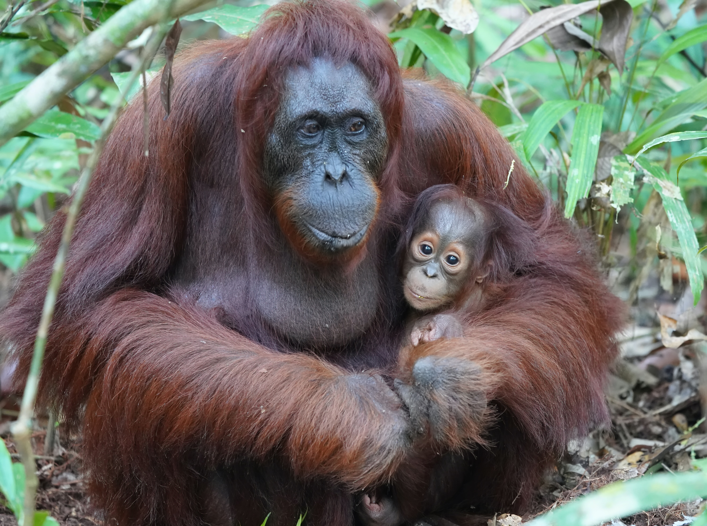
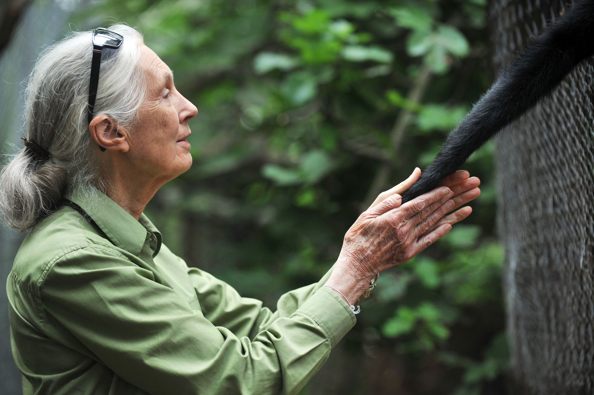

The black spider monkey—also known as the Guiana or red-faced spider monkey—is found in eastern South America in areas north of the Amazon River. They are one of seven species of spider monkeys................
Blue Whale
The blue whale is the largest animal on the planet, weighing as much as 200 tons (approximately 33 elephants). The blue whale has a heart the size of a Volkswagen Beetle. Its stomach can hold one ton of of krill............

Orangutan
The name orangutan means "man of the forest" in the Malay language. In the lowland forests in which they reside, orangutans live solitary existences. They feast on wild fruits like lychees, mangosteens.............
Species that WE NEED TO PROTECT
An endangered species is a type of organism that is threatened by extinction. Species become endangered for two main reasons: loss of habitat and loss of genetic variation.
Loss Of Habitat:
A loss of habitat can happen naturally. Dinosaurs, for instance, lost their habitat about 65 million years ago. The hot, dry climate of the Cretaceous period changed very quickly, most likely because of an asteroid striking the Earth. The impact of the asteroid forced debris into the atmosphere, reducing the amount of heat and light that reached Earth’s surface. The dinosaurs were unable to adapt to this new, cooler habitat. Dinosaurs became endangered, then extinct.
Human activity can also contribute to a loss of habitat. Development for housing, industry, and agriculture reduces the habitat of native organisms. This can happen in a number of different ways.
Development can eliminate habitat and native species directly. In the Amazon rain forest of South America, developers have cleared hundreds of thousands of acres. To “clear” a piece of land is to remove all trees and vegetation from it. The Amazon rain forest is cleared for cattle ranches, logging, and urban use.
Loss Of Genetic Variation
Inbreeding is reproduction with close family members. Groups of species that have a tendency to inbreed usually have little genetic variation, because no new genetic information is introduced to the group. Disease is much more common, and much more deadly, among inbred groups. Inbred species do not have the genetic variation to develop resistance to the disease. For this reason, fewer offspring of inbred groups survive to maturity.
Loss of genetic variation can occur naturally. Cheetahs are a threatened species native to Africa and Asia. These big cats have very little genetic variation. Biologists say that during the last ice age, cheetahs went through a long period of inbreeding. As a result, there are very few genetic differences between cheetahs. They cannot adapt to changes in the environment as quickly as other animals, and fewer cheetahs survive to maturity. Cheetahs are also much more difficult to breed in captivity than other big cats, such as lions.
Human activity can also lead to a loss of genetic variation. Overhunting and overfishing have reduced the populations of many animals. Reduced population means there are fewer breeding pairs. A breeding pair is made up of two mature members of the species that are not closely related and can produce healthy offspring. With fewer breeding pairs, genetic variation shrinks.
warning0Species on
the IUCN Red List
priority_high
0Species are
threatened with extinction
check_circle
0Species saved
from Conservative measures
Why we need to Protect them?

Jane Goodall- A British Animal activist,primatologist and anthropologist
“The Least I can do is speak out for those who cannot speak for themselves”
Plants and animals maintain the health of an ecosystem. When a species becomes endangered, it’s a sign that an ecosystem is out of balance. And the consequences can be critical.Ecosystems are groups of plants and animals that are found in the same area and interact with each other. These interactions make up and maintain the environments we know today – like rainforests, mountains and savannahs.
But the balance within an ecosystem isn’t always easy to maintain; the loss of one species often triggers the loss of others.
For example, when grey wolves were hunted to near-extinction in the United States’ Yellowstone National Park, beaver populations also decreased significantly.
This happened because elk populations, which are usually hunted by wolves, were able to graze freely and more heavily on the plants that were also needed by beavers to survive during winter.
The conservation of endangered species, and restoring balance to the world’s ecosystems, is vital for humans, too. Here’s how.
A well-balanced ecosystem maintains the health of the environment. This ensures that human beings have access to clean air and water, and fertile land for agriculture.It goes without saying that clean air and water improves our quality of life, and fertile land for agriculture ensures that we can produce enough food for consumption. A balanced ecosystem also provides us with plants that have medicinal properties.So, when ecosystems aren’t maintained, our health can be affected too. That’s why, when you add to the conservation of endangered species, you’re also contributing towards humans’ well-being.
Ways to Protect Endangered Species
Conservation of endangered species may sound like a job for politicians and scientists. A problem of such proportions seems impossible to be tackled by the average person. But you can make a significant impact by adopting some simple habits; and if we all do the same, we have the power to protect endangered animals all over the world. Here are 10 ways you can make a difference for endangered species:
1)Don’t Use Harsh Chemicals In Your Household
indeterminate_check_box
2)Dispose Of Waste Properly
3)Prevent Soil Erosion
4)Support An Organization That Fights To Save Endangered Species